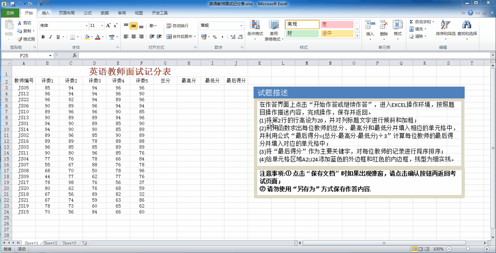
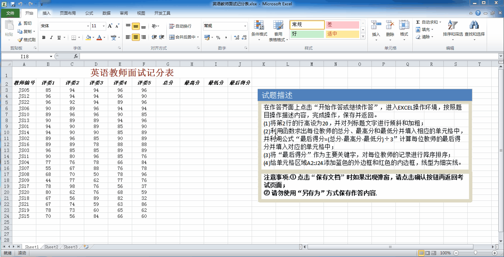
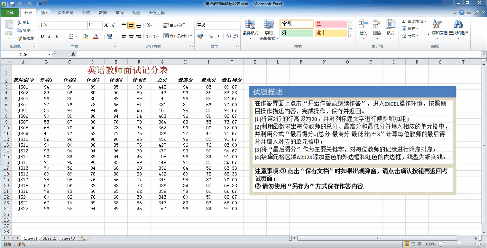

| 英语教师面试记分表 | |||||||||
|---|---|---|---|---|---|---|---|---|---|
| 教师编号 | 评委1 | 评委2 | 评委3 | 评委4 | 评委5 | 总分 | 最高分 | 最低分 | 最后得分 |
| JS01 | 94 | 90 | 89 | 85 | 90 | ||||
| JS02 | 89 | 96 | 85 | 90 | 89 | ||||
| JS03 | 96 | 85 | 85 | 89 | 89 | ||||
| JS04 | 77 | 76 | 78 | 66 | 84 | ||||
| JS05 | 85 | 94 | 94 | 96 | 96 | ||||
| JS06 | 90 | 89 | 96 | 94 | 94 | ||||
| JS07 | 55 | 67 | 88 | 76 | 78 | ||||
| JS08 | 68 | 70 | 50 | 78 | 96 | ||||
| …… 中间数据省略，共 JS01 ~ JS22 (第3行至第24行) …… | |||||||||
| JS20 | 80 | 62 | 76 | 68 | 59 | ||||
| JS21 | 67 | 74 | 59 | 63 | 86 | ||||
| JS22 | 96 | 92 | 94 | 89 | 96 | ||||

=SUM(B3:F3) 回车。=MAX(B3:F3) 回车。=MIN(B3:F3) 回车。=(G3-H3-I3)/3（注意输入法切换到英文状态） ⬅ 严格按照题目！
